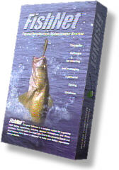
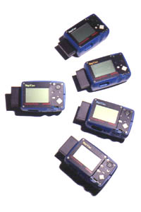
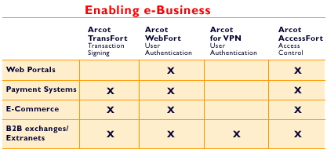

| user |
| home page |
|  | Stallman's article The GNU Project and in several other texts in our philosophy section. . - the GNU Project and the Free Software Foundation (FSF) GNU's Not Unix. What we provide Why we exist Where we are going How you can help us get there Who we are What users think of GNU software The Free Software Directory . This page explains everything and tells you how you can help prevent this disaster. |
|  |
|  | org HylaFAX is a trademark of Silicon Graphics Corporation. . This is the home page for the HylaFAX telecommunication software. HylaFAX is used for sending and receiving facsimiles as well as for sending alpha-numeric pages. The software is designed around a client-server architecture. |